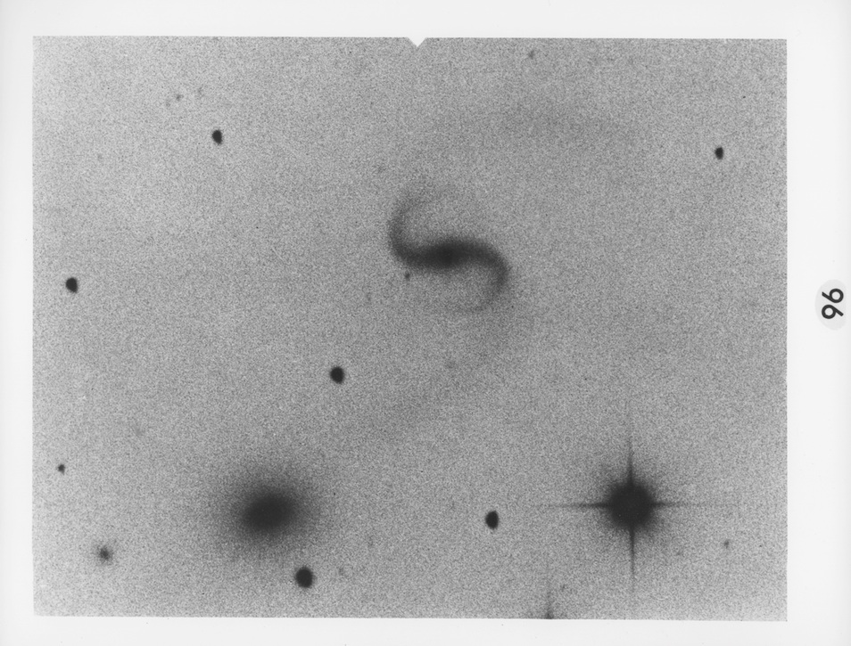

Thommes' Nebula revealed
Thommes' Nebula
New Reflection Nebula
06 57 22.2 -08 23 18
Mag unknown
An image taken by Jim Thommes of the nebula LBN 1022 in Monoceros (http://www.jthommes.com/Astro/LBN1022.htm on November 21, 2009 revealed a new compact reflection nebula surrounding V900 Mon, a recently discovered eruptive variable. The nebula is only barely visible on earlier (POSS) images, so is reminiscent of Jay McNeil's discovery. In addition, Thommes' image showed an intriguing jet or flow to the southwest.
The nascent star has just been shown to be a member of the rare class of FU Orionis stars. The paper can be read at http://www.ifa.hawaii.edu/users/reipurth/PREPRINTS/ms_V900Mon.pdf
Last night (February 18th), I had an opportunity to take a look at the nebula, along with Jimi Lowrey and Jim Chandler, using Lowrey's 48-inch. Thommes' nebula was immediately picked up by Jimi at 285x as a fairly faint, small, round glow, roughly 15" in diameter along with a brighter nearby nebula (see below). At 488x and 814x, the jet was clearly visible as a tail or extension streaming to the southwest and making the nebula appear elongated at least 2:1.
Sharing the same field as Thommes' Nebula is RNO 78 (Red Nebulous Object from Martin Cohen's list of 150 objects in dark clouds), a brighter compact nebula just 3' NNW with a star at the east edge. Using 488x, the nebula was irregular in appearance and three additional stars or knots were resolved within the glow.
Thommes' Nebula was relatively prominent in the 48" and is certainly visible in much smaller scopes -- take a look and let's hear what you find!

GIVE IT A GO AND LET US KNOW
GOOD LUCK AND GOOD VIEWING
Steve Gottlieb
Steve's follow-up — March 17th, 2013, 05:47 PM
I had a chance to take a look again at Thommes Nebula (first view in Jimi's scope) with my 24-inch last weekend and was quite impressed. It was surprisingly easy to pick up at 175x as a fairly faint, round glow <20" diameter. It appeared similar to a small, 14th magnitude galaxy. At 225x, it seemed ~15" diameter with a faint extension to the south or southwest, increasing the size to 25"x15".
If you take a look at this field, you'll immediately notice the reflection nebula RNO 78 just 3' NNW. It appeared moderately bright, fairly small, 20" diameter. A star is at the east edge, barely beyond the glow of RNO 78 and there appeared to be a star embedded in the glow. This little known reflection nebula has a fairly high surface brightness!